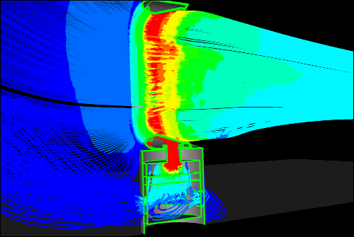

The next version of Caedium is taking shape and, after finalizing its exciting new features, we concluded that the next release is not a mere minor version, but more worthy of a fully fledged major version. So, no more talk of Caedium v3.1, instead get ready for Caedium v4.0! As with the build up to any new Caedium release, we are providing sneak peeks of new capabilities. The twist this time around is that the sneak peeks are interspersed with our regular blog posts - see whether you can spot which ones are which :-)
Idealized Dyson Air Multiplier CFD Simulation - SymmetryUsing new porous and fan boundary conditions